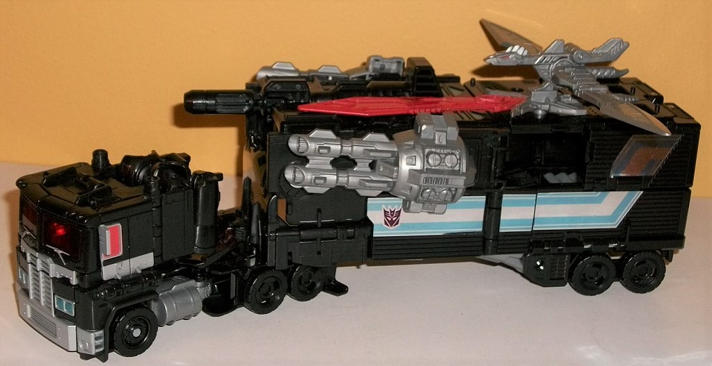
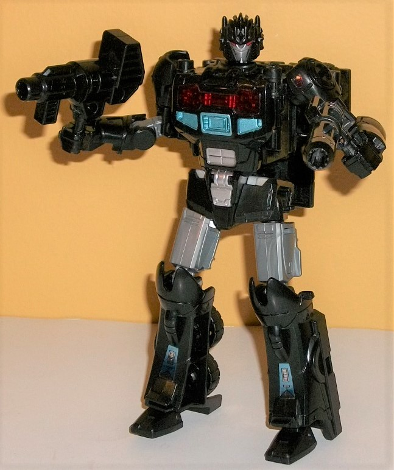
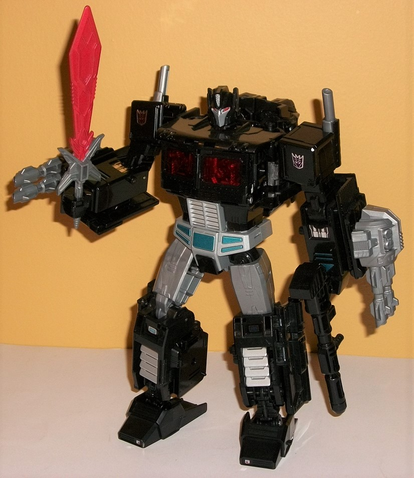
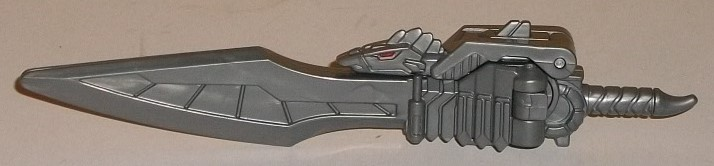
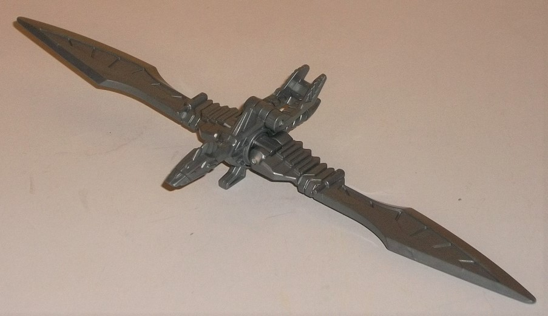

Allegiances
: Decepticon
Size
: Leader
Difficulty of Transformation to Nemesis
Pax's Robot Mode
: Easy
Difficulty of Transformation to Nemesis
Prime's Robot Mode
: Hard
Difficulty of Transformation for Decepticon
Giza
: Very Easy
Color Scheme
: Black, milky gray,
and some red, silver, transparent cherry red, metallic dark purple, and
metallic teal
Rating
: 8.0
(NOTE: Because this is a repaint, this is not a full-blown review. This mainly covers any changes made to the mold and the color scheme, and merely compares it to PotP Orion Pax/Optimus Prime. For a review on the mold itself, read the review of PotP Orion Pax/Optimus Prime here .)



As you'd expect from
a Nemesis repaint, he's mostly black, with some gray, red, and teal. However,
the amounts of these colors is a bit different for this version. In truck
mode especially-- but also true for the other modes-- there's a LOT of
black. Normally, I'd be all "include more of the teal, red, and silver
to help mix things up", but honestly? Having thus much of the toy one color
in truck mode works FOR the toy, as it helps minimize some of the extra
bits on the cab by having them all blend together into one mass, as opposed
to the Optimus Prime color layout for this mold, which differentiated more
of the parts from each other and thus made it more obvious how bad the
cab was. Plus, the back of the cab is often under the "shadow" of the trailer,
making it easier to overlook. This goes for the top of the trailer, as
well. Yeah there's a couple of metallic teal paint apps up there, but it's
still basically all black up there. There is some gray plastic in on the
upper legs of the individual robot mode, but that's very minimal for truck
mode. There's some great paint apps on the front of the cab, though, with
a lot of silver on the grill and nearby parts, as well as metallic teal
headlights. The windows are transparent cherry red on the front and a more
normal shade of red on the sides-- the difference being that you can open
up the front windows to reveal Nemesis Prime's dark Matrix, which is painted
lovely shade of dark metallic purple around the transparent red center.
Little of the rest of the truck has paint, though the sides of the trailer
have foil stickers that basically replicate Optimus' stripes, but with
a Decepticon symbol near the front instead of an Autobot symbol. Wish they
had done something more creative, there. "Nemesis Pax"-- the made-up name
of the "normal" robot mode-- is still mostly black, though the gray plastic
on the upper legs and in the middle of the arms makes itself better known
here, with some silver on the abs and waist and some nice teal and transparent
cherry red on the chest. There's also a small Decepticon foil sticker on
his left shoulder and some small grill-detail stickers on the lower legs.
Nemesis Pax's head has a mold change. He looks much like Optimus Prime,
what with the silver masked face, side antennae, and all, but the center
of his forehead has several spikes on it, almost like a semi-mohawk. It's
a nice twist for what is normally just a mold change-less redeco. In the
combined "Nemesis Prime" robot mode, there's definitely the least amount
of black out of all of his modes-- though he's still certainly mostly black,
which again helps minimize the kibble, like the Nemesis Pax parts behind
his main body and the trailer panels on his arms and legs. The upper legs
are again milky gray (along with the smokestacks on the shoulders), but
there's some silver paint on the waist, abs, and lower legs. Some metallic
teal is on his lower legs and waist, but man I wish they had used this
is more in this mode to break up all the black at least a little more.
There's small foil stickers of Decepticon symbols on his shoulders, piston-like
details on his lower arms, and small colored bits on his knees and feet.
Again there's a head mold change here, with a more evil-looking, slanted
Prime face, complete with larger side "chin" guards and narrowed red eyes
on his silver plated face. Interestingly, it's the exact same design as
that used on the Transformers Club exclusive
Combiner
Wars Toxitron
, which makes me think Hasbro had more plans for that
CW mold that never panned out. Anyways, the whole package looks very good
overall in the combined mode, what with the kibble minimized and an otherwise
good color combo. Oh, and there's also the extra weapons...


Nemesis Prime comes
with a couple of additional accessories-- a good deal, since he's the same
price as your regular PotP Leader-class toy, so they're basically free.
They homage multiple past "Nemesis Primes". He has two large dual-blaster
cannons, which can be plugged onto the lower arms of his "evolved" robot
form. Unfortunately they can't be plugged into vehicle mode, unless you
fold forward two of the side panels on the trailer-- they DO look good
sticking out the sides near the front top of the trailer, but then you've
got big see-through blocks of the trailer behind them, which certainly
don't look great. The guns themselves have some excellent mechanical detailing
on them, with some nice large "bolt" detailing near the back end, and some
intricate circuitry details beneath them. They're an homage to the very
first toy to be named "Nemesis Prime",
the
Armada toy
, who had similar weapons on his forearms. Nemesis Prime
also comes with an extra sword, with lots of really nifty angular details
molded into it, with the blade itself painted red. It can store on the
top of his trailer, on either side of it. Last but certainly not least,
Nemesis Prime comes with a little weapon/bird partner called Decepticon
Giza. Why Giza? It's the name of a similar weapon-partner that came with
the Japanese "Arms Micron" version of Prime-Universe Nemesis Prime. It's
a very simple toy-- in sword mode, it looks similar to a large saber-sword
weapon, with some surprisingly intricate little segmented details near
the hilt. The part above the hilt is a bit larger than normal before we
get to the blade, since that's where the bulk of the bird mode body hands
out, though it's collapsed into a sword-looking silhouette. Still, you
can make out the bird head on the back, which is up against the back of
the blade-- with the red eyes the only paint on the otherwise completely
gray figure, a stern look on its face, and a small "mohawk" on the back--
it has a lot of character. To transform Giza to bird mode, you simply fold
back a small locking piece on the rear of the sword, and then separate
the blade vertically into two halves, which rotate around to become Giza's
wings-- that's it. It's a pretty neat little feature, with Giza's little
foot being able to tab into the hole on one side of Nemesis' "normal" sword,
allowing them both to fit onto the top of the trailer. The blades make
for nice wings, even if, given the way feathers are on birds, it seems
like the curved portion of the blade should be facing in the opposite direction.
They give Giza an impressive wingspan, though unfortunately they're also
the only points of articulation on the toy-- two points at each wing, with
the rotation point moving both wings as one. So given its simplicity, Giza
really treads the boundaries between accessory and bonafide extra figure
pretty narrowly. Still a nice addition, though.
PotP Nemesis Prime/Pax
comes with all of the same design issues that plagued PotP Optimus Prime,
most notably the awful cab mode. However, the reduced number of colors
actually HELPS the toy more than you'd think, since with so much being
black it makes the extra kibble look less egregious, as it doesn't stand
out as much. The trailer-combined "super robot mode" also looks a lot more
unified in its color scheme, as well. The extra weapon accessories, especially
Giza, are also a nice bonus. Recommended over PotP Optimus-- just keep
in mind he still has the design issues, they're just mostly "painted over",
so to speak.
No Stats
Review by Beastbot